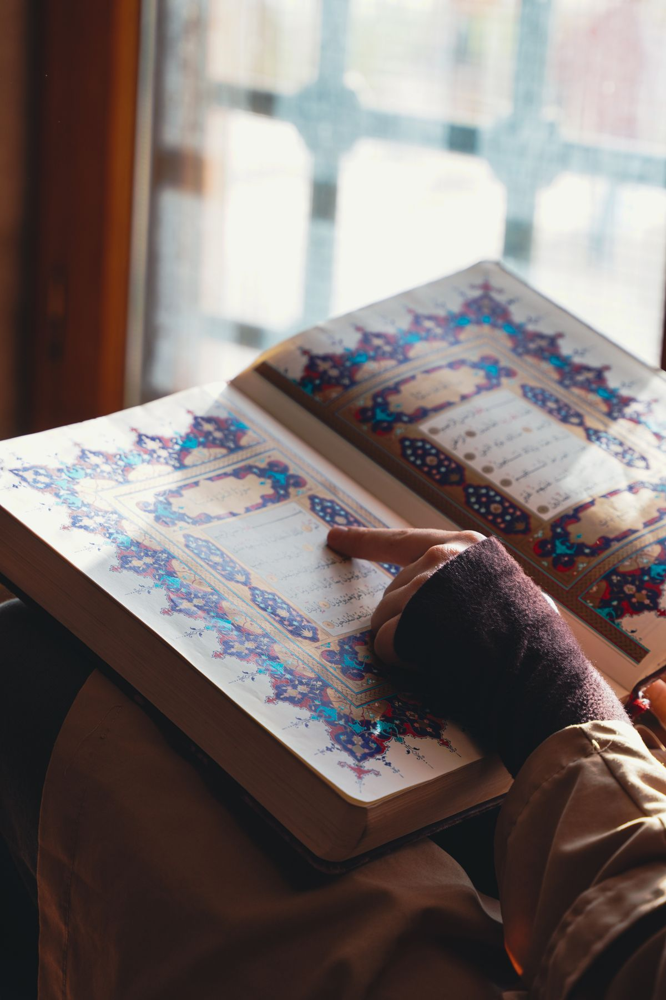
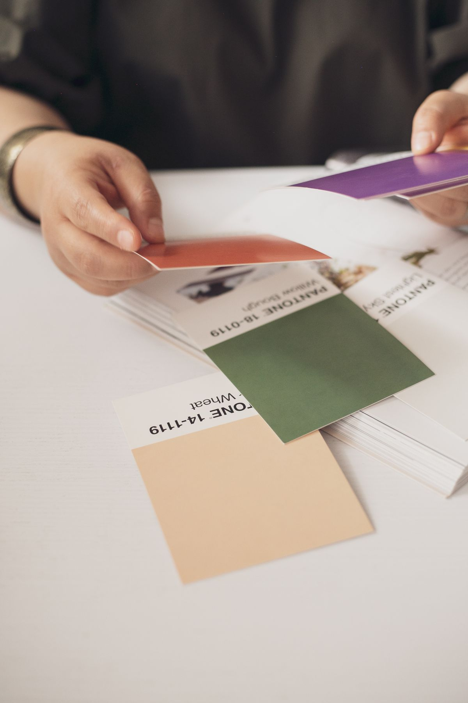

Besok, Kamis 22 Oktober 2026, adalah Hari Santri Nasional, dan poster ucapan untuk sekolah, pesantren, atau komunitas kamu mungkin belum jadi sampai malam ini. Kamu tidak perlu bisa desain untuk menyelesaikannya. Di Canva ada template poster Hari Santri 2026 yang bisa kamu edit gratis: ganti tulisannya, pasang logo resmi dari Kementerian Agama, sesuaikan warnanya, lalu unduh hasilnya sebagai gambar untuk dibagikan atau PDF untuk dicetak.
Artikel ini merangkum tema dan logo resmi tahun ini supaya poster kamu tidak salah pakai tema tahun lalu, lalu langkah editnya di Canva dari awal sampai unduh. Semua keterangan tema, logo, dan jadwal di bawah mengikuti publikasi Kementerian Agama per Oktober 2026.
Hari Santri 2026 jatuh besok, temanya sudah resmi
Hari Santri diperingati setiap 22 Oktober, dan tahun ini jatuh pada Kamis 22 Oktober 2026. Kementerian Agama meluncurkan logo dan tema Hari Santri 2026 pada 22 September 2026, tepat satu bulan sebelum puncaknya. Tema resmi tahun ini adalah Santri Menguatkan Negeri Menuju Indonesia Emas, sebagaimana tercantum dalam Surat Edaran Menteri Agama Nomor 6 Tahun 2026 tentang panduan pelaksanaan peringatannya.
Tahun ini juga menjadi peringatan satu dekade Hari Santri, karena peringatan ini ditetapkan pada 22 Oktober 2016 dan genap sepuluh tahun pada 2026. Di panduan resminya, upacara peringatan dijadwalkan pukul 07.00 waktu setempat. Artinya poster kamu paling lambat harus siap dibagikan malam ini atau besok pagi sebelum upacara dimulai.

Siapkan logo resmi dulu sebelum membuka Canva
Logo resmi Hari Santri 2026 disediakan Kementerian Agama dalam format PNG, JPG, dan PDF, dengan pilihan tampilan berwarna, hitam, dan putih. Pakai berkas resmi itu di poster kamu, jangan menggambar ulang logonya dan jangan memakai logo tahun lalu, karena bentuk dan temanya berbeda setiap tahun.
Bentuk logo tahun ini berupa anyaman atau ikatan yang dinamis. Dua lingkaran yang saling menyimpul di dalamnya melambangkan nilai keagamaan sebagai landasan moral dan kesadaran bernegara sebagai ruang pengabdian. Warnanya biru toska dan keemasan: biru toska mewakili keterbukaan, ketenangan, dan semangat pembaruan, sedangkan keemasan menggambarkan cita cita dan pencapaian menuju Indonesia Emas. Dua warna ini nanti yang kamu samakan dengan warna template di Canva.
Cara bikin poster Hari Santri 2026 di Canva, langkah demi langkah
Template poster Hari Santri 2026 di Canva bisa dibuka dari HP maupun laptop. Kamu hanya perlu akun Canva, dan masuknya bisa memakai akun Google atau email. Sesudah itu ikuti urutan ini:
- Buka Canva, lalu cari template dengan kata kunci poster Hari Santri 2026 dan pilih desain yang paling dekat dengan kebutuhan kamu, untuk unggahan media sosial atau untuk dicetak.
- Klik pilihan untuk memakai template itu sebagai desain baru, supaya yang kamu edit adalah salinannya dan desain aslinya tetap utuh.
- Ganti teks bawaan template dengan ucapan Selamat Hari Santri Nasional 2026, tema Santri Menguatkan Negeri Menuju Indonesia Emas, dan nama sekolah, pesantren, atau lembaga kamu.
- Unggah berkas logo resmi yang sudah kamu siapkan, lalu letakkan di ruang kosong pada poster, misalnya di bagian atas. Kecilkan atau besarkan seperlunya dan jangan menutupinya dengan elemen lain.
- Sesuaikan warna elemen template ke biru toska dan keemasan bila warna bawaannya jauh berbeda, dan ganti foto atau ornamen hanya bila perlu.
- Periksa ulang semua tulisan: ejaan nama lembaga, tulisan tema, dan tanggal 22 Oktober 2026. Kesalahan yang paling sering lolos adalah tema atau logo tahun lalu yang masih tertinggal di salah satu sudut.
Kalau kamu mengedit dari HP, perbesar tampilan saat memeriksa teks kecil seperti nama lembaga dan tema. Teks seperti itu yang paling sering salah ketik dan baru ketahuan sesudah poster dibagikan.
Pilih elemen yang gratis dan samakan warnanya
Tidak semua isi Canva gratis. Sebagian elemen dan fitur hanya bisa dipakai pelanggan Canva Pro, dan elemen berbayar biasanya bertanda Pro atau mahkota di sudutnya. Supaya poster kamu bisa diunduh tanpa kendala, pakai template dan elemen yang tidak bertanda itu, atau ganti elemen berbayar dengan elemen gratis yang mirip.
Soal warna, kamu tidak wajib mengubah seluruh template. Cukup samakan warna yang paling terlihat, misalnya warna teks utama, garis, atau latar judul, ke arah biru toska dan keemasan seperti logo resmi. Poster akan terlihat menyatu dengan logo, dan orang yang melihatnya langsung mengenali identitas Hari Santri tahun ini.

Unduh dengan format yang tepat untuk kebutuhanmu
Sesudah selesai mengedit, buka menu Bagikan lalu pilih Unduh. Untuk dibagikan ke Instagram, WhatsApp, atau Facebook, pilih format PNG atau JPG. Untuk dicetak sebagai poster kelas atau dekorasi pesantren, pilih format PDF supaya hasilnya lebih layak cetak.
Buka berkas hasil unduhan itu sekali lagi sebelum dibagikan. Cek apakah logo resmi tampil utuh, teks tema terbaca jelas dari jarak normal, dan tidak ada elemen berbayar yang berubah menjadi tanda air. Bila ada yang kurang pas, kembali ke editor Canva dan perbaiki dari salinan desainmu, bukan mengedit berkas gambar hasil unduhannya.
Intinya
Poster Hari Santri 2026 bisa kamu selesaikan malam ini tanpa keahlian desain: ambil template gratis di Canva, edit salinannya, ganti teksnya dengan ucapan dan tema resmi Santri Menguatkan Negeri Menuju Indonesia Emas, pasang logo resmi Kementerian Agama dalam format PNG, JPG, atau PDF, samakan warna utamanya ke biru toska dan keemasan, lalu unduh sebagai PNG atau JPG untuk dibagikan dan PDF untuk dicetak. Peringatan puncaknya besok, Kamis 22 Oktober 2026, jadi selesaikan malam ini dan bagikan sebelum upacara pukul 07.00 waktu setempat.
← Kembali ke Other